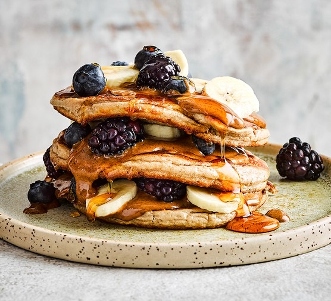

Protein Pancakes

The ONLY protein pancake recipe you will ever need!
This pancake recipe will be one of the easiest pancakes you will
ever make! They only require 4 ingredients. You read that correctly,
ONLY 5 ingredients. You can add any toppings you want to this recipe to
make it your own. GET CREATIVE!
Ingredients
- eggs - 2
- Oatmeal - 40 grams
- 1 scoop of favourite protein powder
- Ripe Banana - 1
- Choice of cooking oil (butter, cooking spray, or oil)
Steps
- add eggs, oatmeal, protein to a blender.
- Blend until smooth, then add banana, and blend till the mixture becomes like a smoothie consistency.
- Heat oil of choice on a frying pan at low heat.
- Pour mixture on to heated pan to desired size.
- Once small bubbles form on the top, check bottom,
if it has reached a golden brown, flip it and cook till finished.